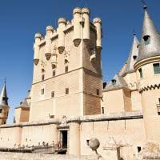

Segovia


Quedaremos en el monumento más simbólico de Segovia: el acueducto. Desde allí comenzaremos nuestra ruta por el centro hisórico de Segovia. Seguiremos el mismo recorrido que en la visita guiada por Segovia y nos adentraremos además en la Catedral de Santa María para explorar el interior de esta joya arquitectónica del siglo XVI.
Recorreremos este edificio conocido como "la dama de las catedrales" por su gran tamaño y su fusión de elementos góticos y renacentistas. Accederemos a las capillas radiales de la catedral y admiraremos el gran retablo que ocupa la mayor parte del altar.
El paseo finaliza en el Alcázar de Segovia, una de las fortalezas más famosas de España. Entraremos en su interior para conocer todo lo que ofrece.